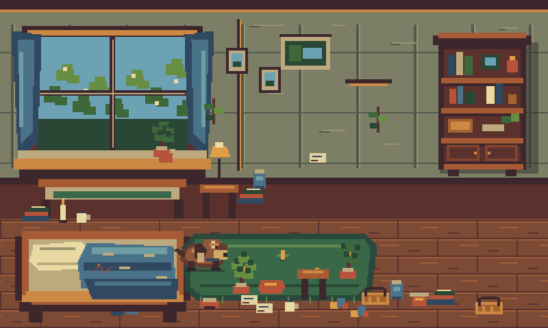
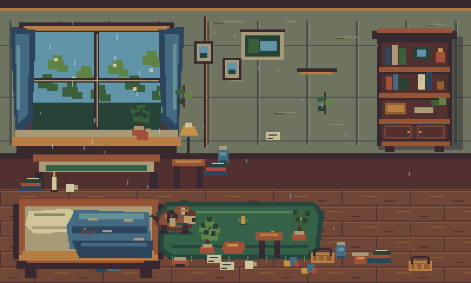
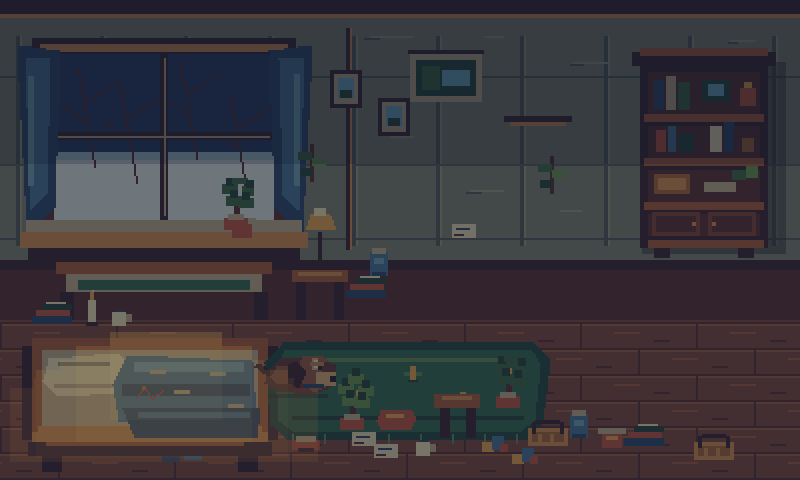
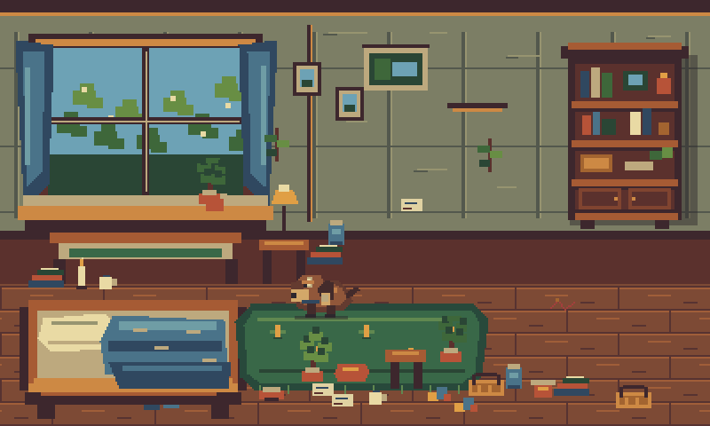
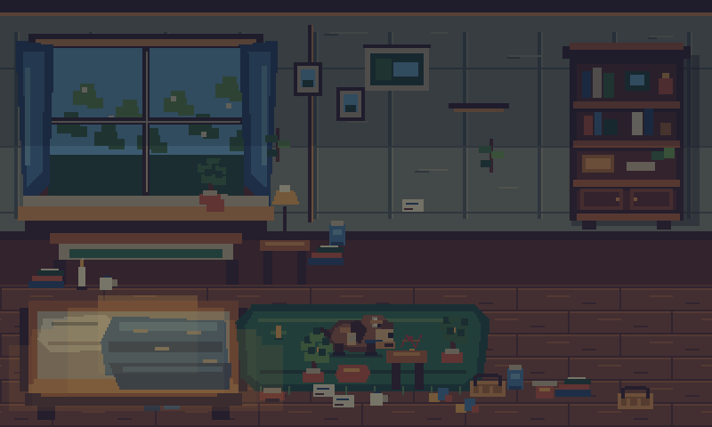

Terrarium — Godot Presentation POC
This page is for the visual decision gate. Click any image to open the exact 800×480 PNG at full size. The Godot images below are the final post-import deterministic renders; the first image is the accepted Canvas baseline for the same spring-clear fixture.
Primary question: does the Godot direction look sufficiently closer to the desired pixel-art presentation that it is worth continuing the renderer migration and doing a dedicated art-production pass?
Direct baseline comparison
{kind=link}
Godot — spring clear
{kind=link}

Final bounded art pass: layered room, Y-sorted objects, foreground occlusion, authored right-wall anchor, revised Moss.
Environment states
Spring rain
{kind=link}

Winter warm night
{kind=link}

Movement & interaction
Walk to window
{kind=link}

{kind=link}
{kind=link}
{kind=link}
Thread rumpled
{kind=link}

{kind=link}
Suggested review order: Canvas vs Godot spring → winter warm night → spring rain → walk/inspect/carry → thread state changes.